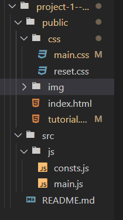
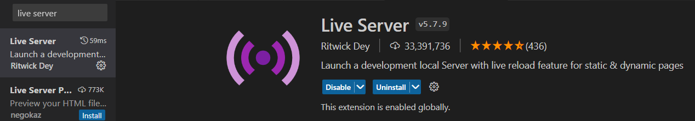

Workshop - Start to Code
Wij gaan met behulp van deze tutorial een kleine geoguessr maken die plaatsvindt in Gent.
De Gentoguessr.
De 3 verschillende codetalen
- HTML
- CSS
- JavaScript
Stap 1: Mappen en Bestanden
-
Stap 1.1
Maak een nieuwe mapje aan en geef het de naam Gentoguessr.
-
Stap 1.2
Open dit mapje in Visual Studio Code
-
Stap 1.3
Bouw de mappenstructuur samen met de bestanden die in screenshot worden weergegeven.
 -
Stap 1.4
Als je wil kan je de extensie Live Server installeren in visual studio code. Deze vernieuwt de pagina automatisch. Dit hoeft natuurlijk niet. Je kan de pagina ook altijd vernieuwen.

Stap 2: HTML & CSS
-
Stap 2.1
Kopieer de volgende HTML code in je HTML file.
-
Stap 2.2
Kopieer de volgende CSS code in je CSS file.
-
Stap 2.3
Nu kan je het resultaat hieronder zien.
Stap 3: JavaScript
-
Stap 3.1
Voeg deze regel onder je footer toe. Dit linkt je JavaScript bestand met je HTML.
-
Stap 3.2
Ga naar je JavaScript bestand en voeg in het bestand
alert("Het werkt").
Herlaad dan de browser en als de alert erop komt dan is het JavaScript goed gelinkt met je HTML. -
Stap 3.3
Verwijder de alert code en voeg de onderstaande code in je JavaScript bestand toe.